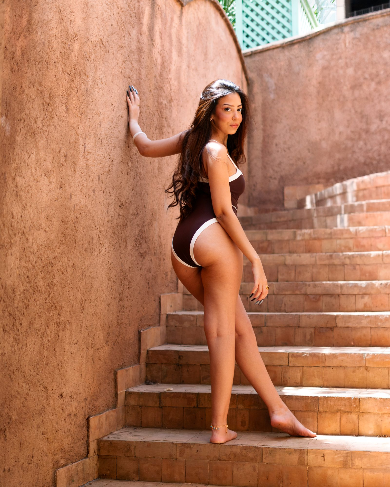
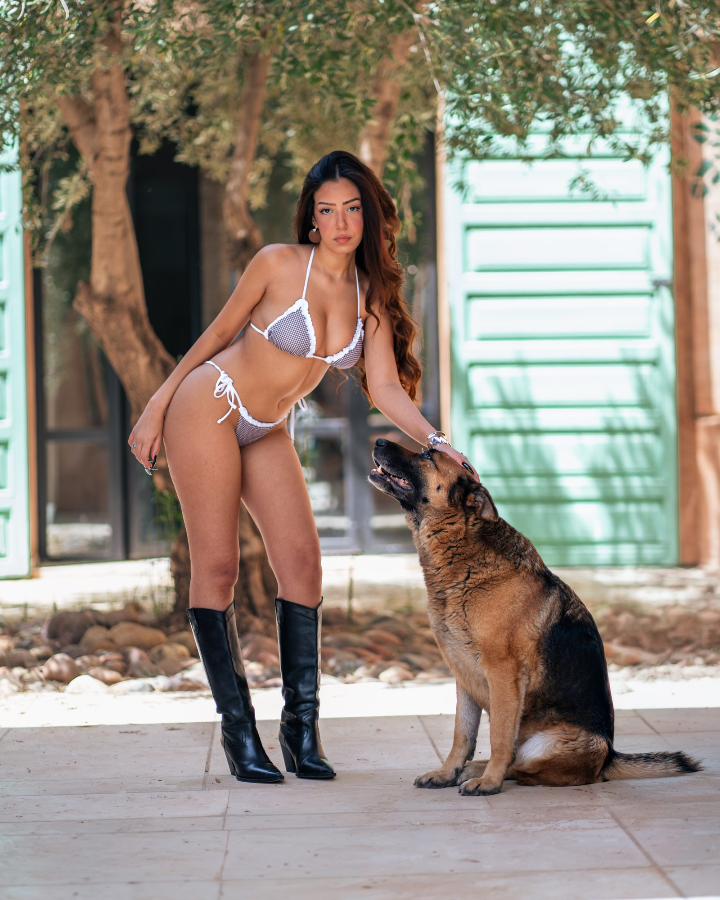
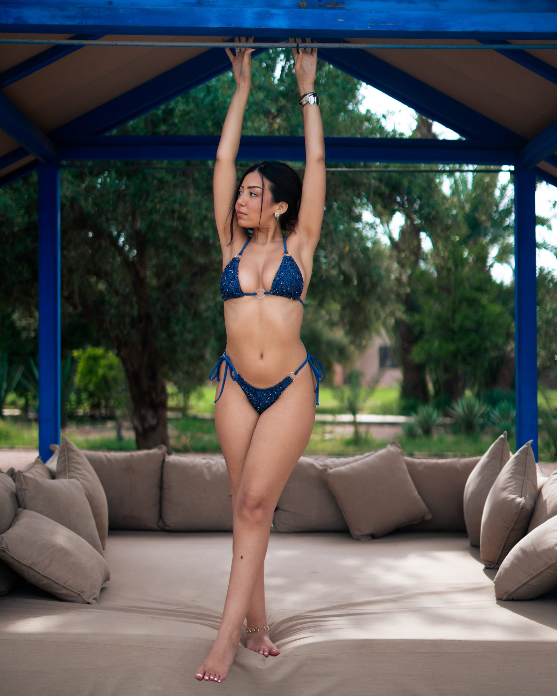
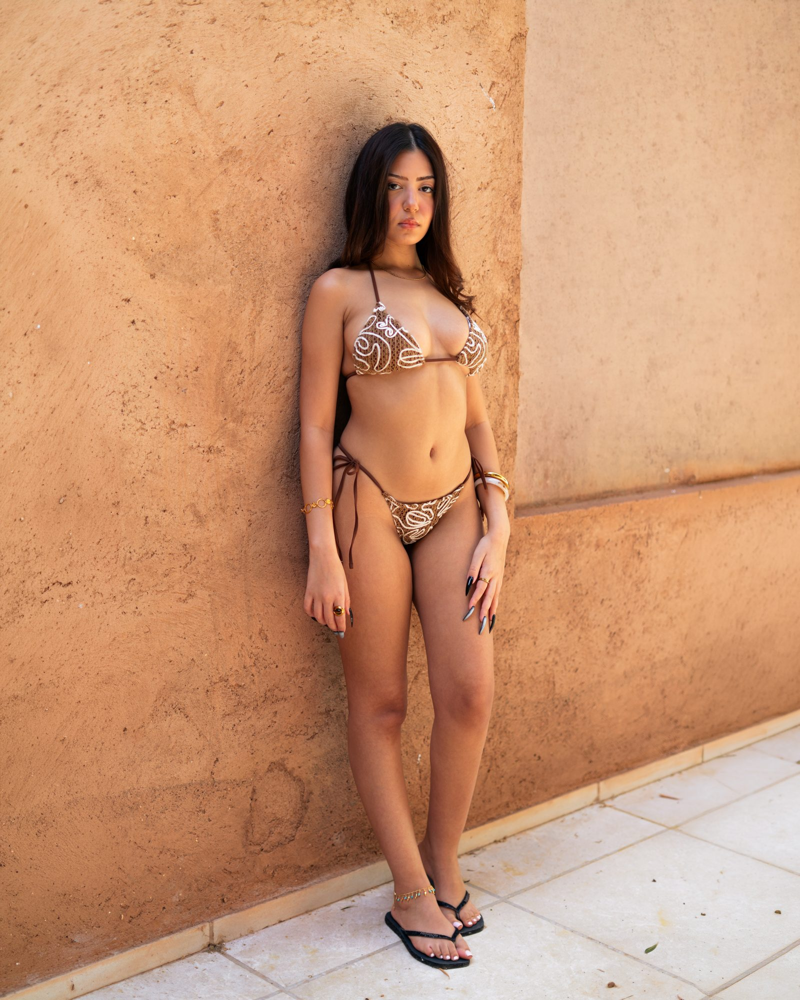

October 12, 2026 — Guide
Swimwear Photographer in Marrakech: Villa Sessions

A private villa in Marrakech — sun-drenched pool, palm shadows on warm stone, total privacy. That's where the best swimwear photoshoots in Marrakech happen. No beach crowds, no rush — just you, the light, and the water. Here's what a swimwear session in Marrakech looks like, from a photographer who shoots them regularly.
Why a villa works best
Privacy — a private pool means relaxed, natural shots. No strangers in the background, no feeling watched. You move freely, and it shows in the photos.
The light — Marrakech villas are built for the sun. Morning light on the water, afternoon shadows through the palms, golden hour on the terrace — every hour gives a different mood.
The setting — zellige tiles, arches, bougainvillea, still water. A Marrakech villa gives you editorial backdrops without leaving the property.


What to bring & how it works
Bring 2–3 swimsuits (solid colors photograph best — black, white, terracotta), a light cover-up or linen shirt for variety, and minimal jewelry. Wet hair looks great — don't fight it.
A typical swimwear session lasts 1–2 hours at the villa. We start with dry looks by the pool, move into the water as the light gets softer, and finish with golden-hour portraits on the terrace. You don't need modelling experience — I direct every pose, and most of the best shots are candid, between poses.

Book a swimwear photographer in Marrakech
I'm Mohamed Lemsayl — photographer based in Agadir, shooting swimwear in Marrakech and Taghazout. I shoot natural-light swimwear editorials: solo sessions, brand lookbooks and resort content. See the style in my swimwear gallery.
Have a villa, or need help finding one? Tell me your dates — I'll handle the rest.
Planning a Marrakech trip? Let's shoot.
Book a swimwear session